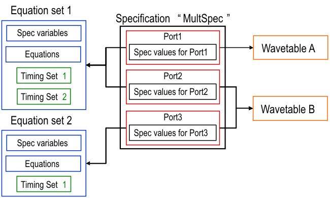

Multiport timing specifications
Multi-port testing allows you to run different, and mutually independent, sequencer programs (see The sequencer program) with different timing setups for different groups of pins (called ports) in parallel.
A multiport timing specification is the multiport counterpart of an ordinary single-port timing specification. It defines complete equation based timings for a non-overlapping set of ports This port set cover all configured pins.
In contrast to a single-port setup, a multiport timing specification is identified by a name, not a pair of numbers. The name can consist of up to 40 characters. If it contains spaces, it must be enclosed by double quotes; it must not contain a semicolon.
A multiport timing specification contains the following items for each member of a port set that partitions the configured pins:
- pointers to an equation set and to a wavetable,
- values for the base variables of the respective equation set,
- control information about consistency checks,
- control information about port synchronization.
The first three elements are those of a single-port specification. The control information about port synchronization is multi-port multiport specific: you can specify a sequencing group for the port and/or set the PHASE flag for it. For details on both options see Synchronizing vectors in a multiport setup.
The values for the base variables of these equation sets are specified per port: If you associate the same equation set with two ports within one specification, you can assign different values to the same spec variable for the two ports (for more details see Global and local scope of base variables).
Note however, that the set of spec values for the individual ports does not exist independently of the multiport specification. When you want to include one port with the same equation set, the same wavetable, and exactly the same specification values in two multiport specifications, you must define the complete value set in both multiport specifications.
The following figure displays the structure of multiport specifications by the schematic example specification "MultSpec":

Example
The following multiport timing specification corresponds to the schema above:
SPECIFICATION "MultSpec"
{
CHECK all
EQNSET 1 "equation set 1"
WAVETBL "wavetable A"
PORT Port1
SYNC
{
PHASE
SEQUENCE "gr1"
}
var 8
EQNSET 1 "equation set 1"
WAVETBL "wavetable B"
PORT Port2
SYNC
{
PHASE
SEQUENCE "gr2"
}
var 12
EQNSET 2 "equation set 2"
WAVETBL "wavetable B"
PORT Port3
SYNC
{
PHASE
SEQUENCE "gr2"
}
var 10
}Note the following points in this example:
- The PHASE flag is set for all three ports; the first port belongs to
sequencing group
gr1, the other two to sequencing groupgr2.For the implications of this see Synchronizing vectors in a multiport setup.A third possible option for the SYNC block is CLOCK <clock_group>. For details see Avoiding rounding problems with different clock groups.
Port1andPort2use the same equation set, but assign different values to the base (spec) variablevar.- The
CHECK allstatement is placed before the first port block to indicate that it is to be applied to all three ports. - If the variable
varis used to define the period length in timing set 1 of equation set 1 and 2, then the common period resolution of all ports will be calculated as 4 ns, and the period forport3will be auto-corrected from 10 ns to 12 ns.
Multi-port burst labels shows how this multiport timing specification can be combined with a multiport vector setup.
Functional changes
- Introduced before SmarTest 6.3.2